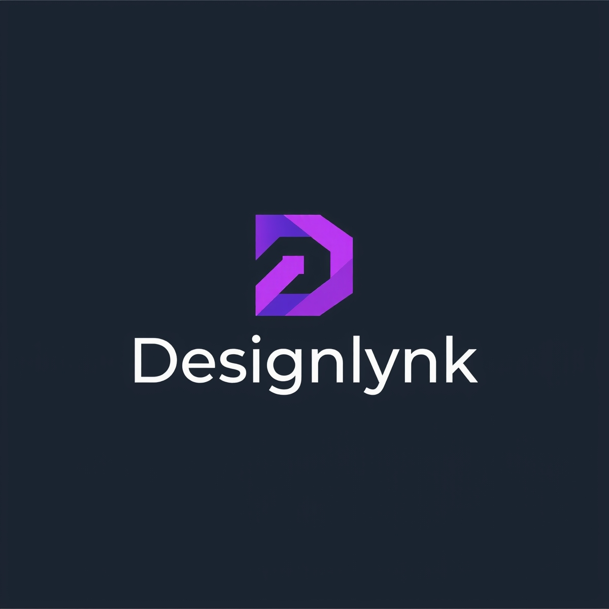

This manual is published in terms of section 51 of the Promotion of Access to Information Act, 2 of 2000 ("PAIA"), as amended by the Protection of Personal Information Act, 2013 ("POPIA"). It explains how a member of the public or a Designlynk User can request access to records held by Designlynk (Pty) Ltd ("Designlynk").
Designlynk (Pty) Ltd
Information Officer: [To be appointed]
Deputy Information Officer: [To be appointed]
Email: privacy@designlynk.co.za
The South African Human Rights Commission publishes a guide on how to use PAIA, as required by section 10 of the Act. That guide is available from the South African Human Rights Commission and explains the process in more general detail than this manual.
The following records are made available on the Designlynk website or app without the need for a formal PAIA request:
Designlynk holds the following categories of records, some of which may be requested under PAIA subject to the grounds of refusal set out in the Act:
A request for access to a record must be made using the prescribed form (Form 2 under the PAIA Regulations), addressed to the Information Officer at the contact details above. The request should describe the record sought in sufficient detail to allow it to be located, and confirm the requester's identity.
Designlynk will respond within 30 days of receiving a valid request, as required by PAIA. If access is refused, reasons will be provided along with information about the right to appeal or apply to the Information Regulator.
A request fee and, where access is granted, a reproduction fee may be payable, calculated in accordance with the fee schedule prescribed under the PAIA Regulations. Current fee amounts are available from the Information Officer on request.
Access to a record may be refused on grounds set out in Chapter 4 of PAIA, including where a record contains another person's personal information, trade secrets, or privileged legal advice, subject to the public interest override where applicable.
A requester who is dissatisfied with a decision may lodge a complaint with the Information Regulator: complaints.IR@justice.gov.za.
This manual is available on the Designlynk website/app and may be requested in writing from the Information Officer at no charge.